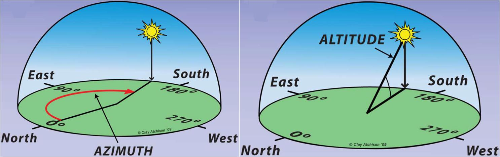

Bar chart Visualization Of Solar Eclipse parameters
Select a Eclipse from Dropdown
Solar azimuth angle is defined as the angle between the projection of sun's centre onto the horizontal plane and due south direction

To know more about saros number click here